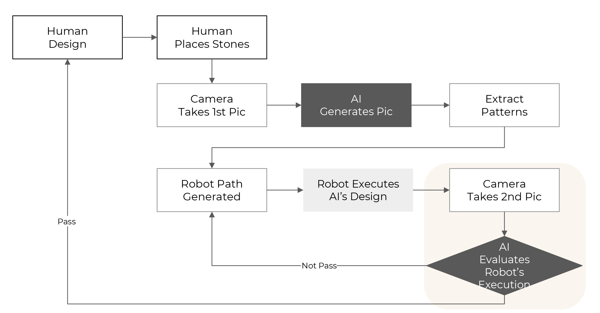
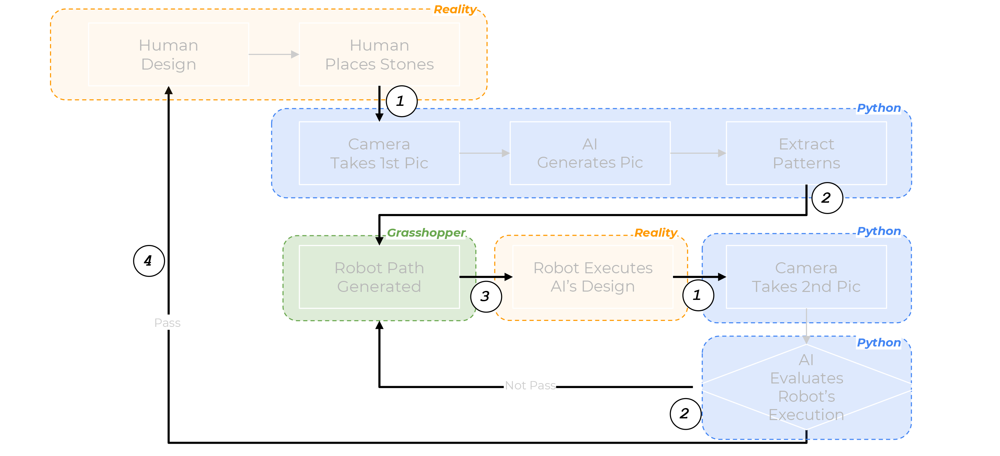
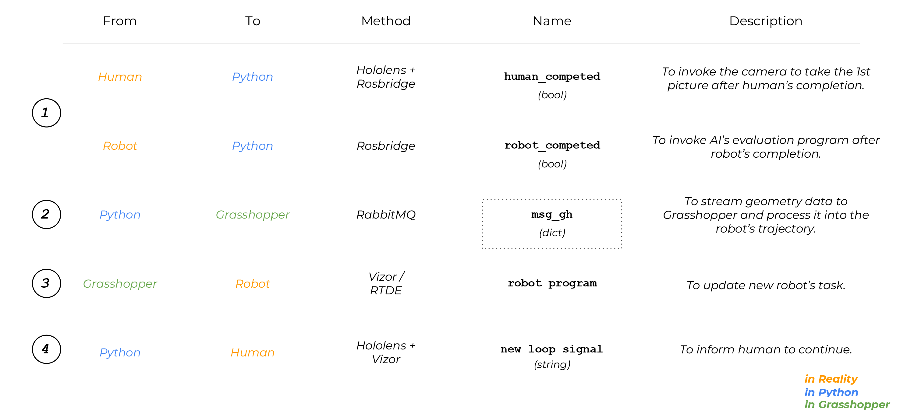
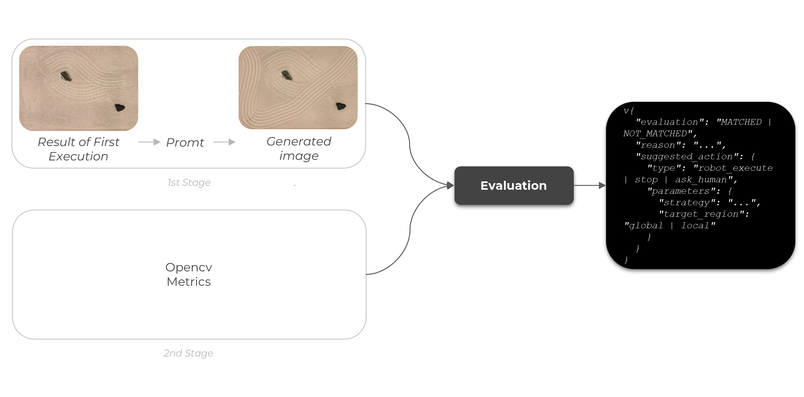
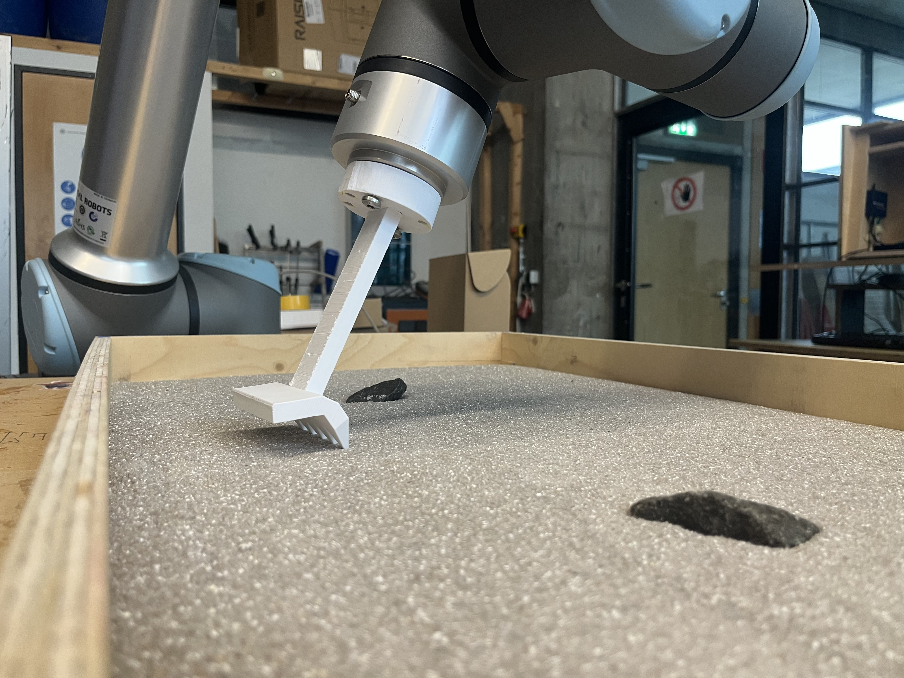
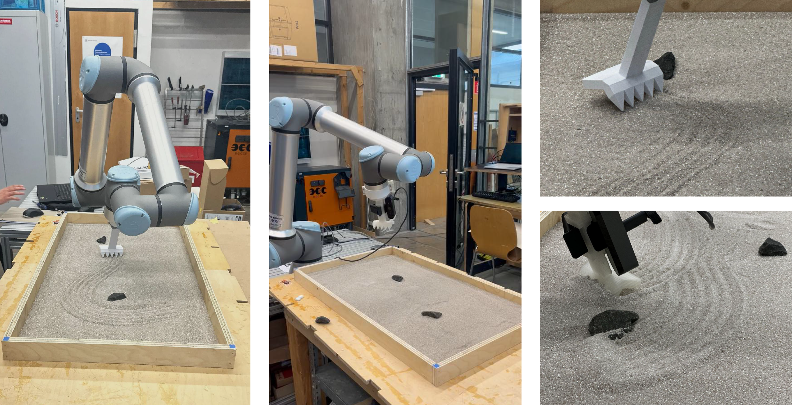

The iterative cocreation process of the robot, human, and AI agent.

The workflow of the Gen Garden system, including the generation and evaluation agents.

The platform architecture of the Gen Garden system.

The communication structure between the robot, human, and AI agent.
Gen Garden system communication in digital simulation.


The generation and evaluation agents within the Gen Garden system.



Earlier exploration → Tic Tac Toe